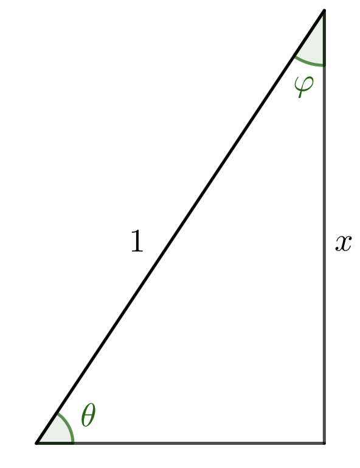
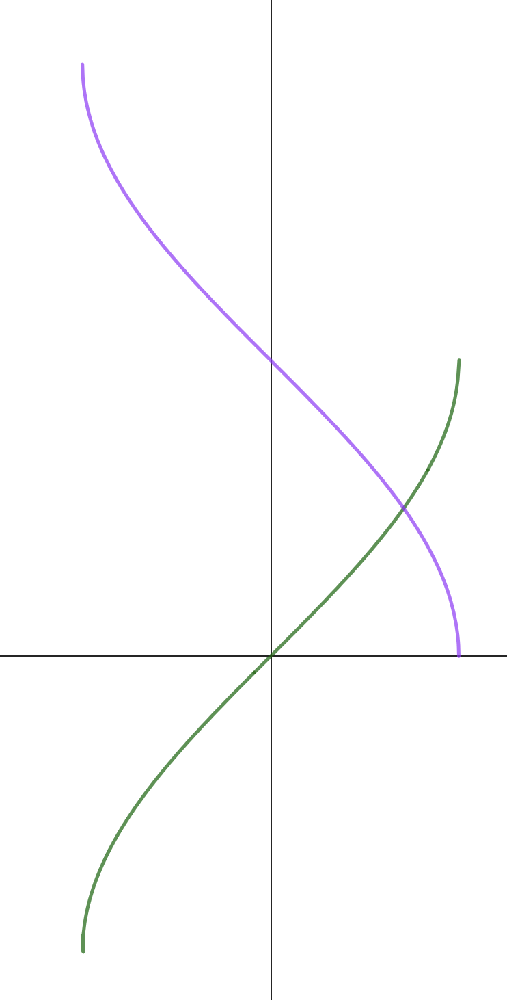
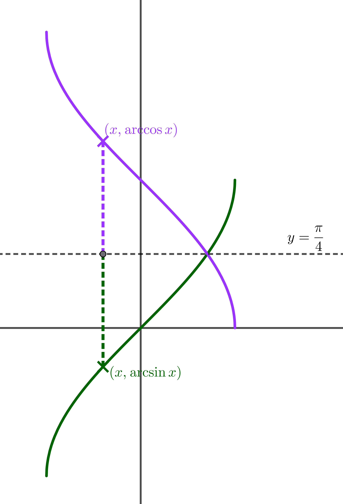

Welcome to inverse circular functions
This stage explores the inverse functions of sine, cosine, and tangent—arcsin, arccos, and arctan. You'll discover how to define these functions properly, understand their domains and ranges, and see why they're crucial for solving equations and understanding the deeper properties of circular functions.
Think carefully about domains and ranges—they're crucial for inverse functions!
Dr Brian Brooks
Mathematics InSight
Early in your students’ mathematical careers, they will have happily use the \(\arcsin\) key on their calculators to find angles in right-angled triangles when they know side lengths. This is probably one of their earliest encounters with the idea of the inverse of a function, although of course it is not framed this way.
At the start of our work on circular functions, we spent plenty of time separating these functions from right-angled triangles using the unit circle. From there, we generated graphs of the circular functions. It’s time to look at a similar process for their inverses. In right-angled triangles, we are only dealing with angles between \(0\) and \(\frac{\pi}{2}\). For each ratio of two sides, there is only one possible angle, so in this range, the inverse functions are well defined. However, when we look at angles outside this range, it is not immediately clear what the inverses of the functions might be. For example:
\(\sin\frac{\pi}{6} = \sin\frac{5\pi}{6} = \sin\frac{13\pi}{6} = \sin\frac{17\pi}{6} = \ldots = \frac{1}{2}\).
So is \(\arcsin\frac{1}{2} = \frac{\pi}{6}\text{or}\frac{5\pi}{6}\text{or}\frac{13\pi}{6}\text{or}\frac{17\pi}{6}\text{or}\ldots\) ?
and is \(\arcsin\left( - \frac{1}{2} \right) = - \frac{\pi}{6}\text{or}\frac{11\pi}{6}\text{or} - \frac{5\pi}{6}\text{or}\frac{7\pi}{6}\text{or}\ldots\) ?
Similar questions arise for the inverses of the other circular functions.
The answer is, in general, that we make the simplest possible choice, so, for example:
\[\begin{matrix} & \arcsin\frac{1}{2} = \frac{\pi}{6} & \arcsin\left( - \frac{1}{2} \right) = - \frac{\pi}{6} \\ \phantom{-} & & \\ & \arccos\frac{1}{2} = \frac{\pi}{3} & \arccos\left( - \frac{1}{2} \right) = \frac{2\pi}{3} \\ \phantom{-} & & \\ & \arctan\frac{\sqrt{3}}{3} = \frac{\pi}{6} & \arctan\left( - \frac{\sqrt{3}}{3} \right) = - \frac{\pi}{6} \\ \phantom{-} & & \end{matrix}\]
In other words, for \(\arcsin\) and \(\arctan\) we will always choose a value between \(- \frac{\pi}{2}\) and \(\frac{\pi}{2}\) , whereas for \(\arccos\) we will choose a value between \(0\) and \(\pi\).
In the language of functions, we can say:
\[\begin{array}{r} \arcsin:\{ x| - 1 \leq x \leq 1\} \rightarrow \{ y| - \frac{\pi}{2} \leq y \leq \frac{\pi}{2}\} \end{array}\]
\[\begin{array}{r} \arctan:\mathbb{R} \rightarrow \{ y| - \frac{\pi}{2} \leq y \leq \frac{\pi}{2}\} \end{array}\]
\[\begin{array}{r} \arccos:\{ x| - 1 \leq x \leq 1\} \rightarrow \{ y|0 \leq y \leq \pi\} \end{array}\]
Actually, for \(\sin\) and \(\arcsin\) to be inverses of each other, the domain of each has to be the range of the other. This means that the inverse of \(\arcsin\) is not \(\sin\), but the restriction of \(\sin\) to the domain \(\left\{ x| - \frac{\pi}{2} \leq x \leq \frac{\pi}{2} \right\}\). This is really a technicality too far at this stage in your students mathematical careers, but it could possibly come up in questions!
One way to approach this with your class would be to tell them all this, and then move on to some questions. But if you want your class to have a deeper insight into the inner workings of these inverse functions, you might consider thinking about them from the point of view of unit circles (the first part of this worksheet) or of graphs (the second part). Or even both!
Whatever you decide, there is still plenty in this worksheet to explore once you have your definitions in place.
When \(0 \leq \theta \leq \displaystyle\frac{\pi}{2}\):
What is \(\theta\) in terms of \(x\)?
What is \(\theta\) in terms of \(y\)?
What is \(\theta\) in terms of \(\displaystyle{\frac{y}{x}}\) ?

When \(0 \leq \theta \leq \displaystyle\frac{\pi}{2}\):
What is \(\theta\) in terms of \(x\)?
What is \(\theta\) in terms of \(y\)?
What is \(\theta\) in terms of \(\displaystyle{\frac{y}{x}}\) ?
\[\begin{aligned} & \cos\theta = x\qquad\sin\theta = y\qquad\tan\theta = \frac{y}{x} \\ \phantom{-} & \\ & \Rightarrow \theta = \arccos x = \arcsin y = \arctan\frac{y}{x} \end{aligned}\]
So long as \(0 \leq \theta \leq \displaystyle\frac{\pi}{2}\), there is only one value of \(\theta\) that makes \(x = \cos\theta\), \(\;y = \sin\theta\), and \(\;\displaystyle\frac{y}{x} = \tan\theta\). So we know exactly what angle we mean by \(\arccos x\), \(\arcsin y\), or \(\arctan\displaystyle\frac{y}{x}\).
Use this diagram to find the values below (no calculator, of course):

\[\begin{matrix} \sin\displaystyle\frac{\pi}{3} & & & & & & & & & & & & \arcsin\displaystyle\frac{\sqrt{3}}{2} \\ \end{matrix}\]
Next, we'll look at the whole thing again from the point of view of graphs.
On the same set of axes, draw the graphs \(y=\sin x\) and \(x=\sin y\)
On the same set of axes, draw the graphs \(y=\sin x\) and \(x=\sin y\)
Can you explain why the graph \(y=\arcsin x\) is not the same as the graph \(x=\sin y\) ? The video might help you to see why this should be.
To see this, first solve the equation \(\sin y = \frac{1}{2}\) and explain how your answer relates to the graphs.

Solve the equation \(\sin y = \frac{1}{2}\) and explain how your answer relates to the graphs.
\(\sin y = \frac{1}{2}\) has solutions
\[y = \frac{\pi}{6},\frac{5\pi}{6},\frac{13\pi}{6},\ldots - \frac{7\pi}{6}, - \frac{11\pi}{6}, - \frac{19\pi}{6},\ldots\]
and these values are where the graphs \(x = \sin y\) and \(x = \frac{1}{2}\) intersect.
How many values do you want for \(\arcsin\frac{1}{2}\) ?
How many times do you want the line \(x = \frac{1}{2}\) to intersect with the graph \(y = \arcsin x\) ?
Like any function, the function \(y = \arcsin x\) must be well-defined (that is, uniquely defined) for all values of \(x\) in its domain.
That means that the line \(x = \frac{1}{2}\) must intersect with the graph \(y = \arcsin x\) exactly once.
How can you adapt the graph \(x = \sin y\) to ensure that any vertical line between \(x = - 1\) and \(x = 1\) intersects it exactly once?
We need to choose just a small part of the curve \(x = \sin y\), making sure that it is big enough to intersect every vertical line between \(x = - 1\) and \(x = 1\), but small enough to make sure that no such vertical line intersects this section of the curve more than once.
There are many such segments . . . an infinite number, in fact.Some of the possibilities are coloured pink and green in this diagram.

We could choose any coloured section of the graph \(x = \sin y\), but it would be strange (though not impossible) to choose any segment other than the one that would mean \(\arcsin0 = 0\).
Which of these pink or green segments on the curve would correspond to the most sensible definition of the function \(\arcsin x\) ?

Only the pink segment here is the graph \(y = \arcsin x\).
What are the domain and range of the function \(f(x)=\arcsin x\)?
What are the domain and range of the function \(f(x)=\arcsin x\)?
The easiest way to see this is to look at the graph:
\(\text{domain}=\big\{x|-1\leq x\leq 1\big\}\)
\(\text{range}=\Big\{y\Big |-\displaystyle\frac{\pi}{2}\leq x\leq \displaystyle\frac{\pi}{2}\Big\}\)
Draw the graph \(y = \cos x\).
On the same axes, draw the graph \(x=\cos y\).

Draw the graph \(y = \cos x\).
On the same axes, draw the graph \(x=\cos y\).
As before, any of the coloured segments will ensure that the vertical line cuts the graph exactly once at all times.
Which segment shall we choose for the graph \(y=\arccos x\) ?

domain:
\[\{ x: - 1 \leq x \leq 1\}\]
range:
\[\left\{ y:0 \leq y \leq \pi \right\}\]

Draw the graphs \(y=\tan x\) and \(x=\tan y\) on the same set of axes.

What are the domain and range of the function \(y=\arctan x\)?
What are the domain and range of the function \(y=\arctan x\)?
The red graph is the graph \(y=\arctan x\), giving
domain:
\[\mathbb{R}\]
range:
\[\left\{ y: - \frac{\pi}{2} < y < \frac{\pi}{2} \right\}\]
What are
\[\arcsin x + \arccos x\]
when
\[x=0,\;x=\pm\frac{1}{2},\;\pm\frac{\sqrt 2}{2},\;\pm\frac{\sqrt 3}{2},\;\pm 1\]
For example: \[\arcsin\frac{\sqrt{2}}{2} + \arccos\frac{\sqrt{2}}{2} = \frac{\pi}{4} + \frac{\pi}{4} = \frac{\pi}{2}\]
\[\arcsin0 + \arccos0 = 0 + \frac{\pi}{2} = \frac{\pi}{2}\]
\[\arcsin1 + \arccos1 = \frac{\pi}{2} + 0 = \frac{\pi}{2}\]
\[\arcsin( - 1) + \arccos( - 1) = - \frac{\pi}{2} + \pi = \frac{\pi}{2}\]
\[\arcsin\left(-\frac{\sqrt{2}}{2}\right) + \arccos\left(-\frac{\sqrt{2}}{2}\right) = -\frac{\pi}{4} + \frac{3\pi}{4} = \frac{\pi}{2}\]
\[\arcsin\frac{1}{2} + \arccos\frac{1}{2} = \frac{\pi}{6} + \frac{\pi}{3} = \frac{\pi}{2}\]
\[\arcsin\left(-\frac{\sqrt{3}}{2}\right) + \arccos\left(-\frac{\sqrt{3}}{2}\right) = -\frac{\pi}{3} + \frac{5\pi}{6} = \frac{\pi}{2}\]

\(\arcsin x + \arccos x = \theta + \varphi = \frac{\pi}{2}\) when \(x\) is positive.
When \(x\) is positive, we can easily see this from the right-angled triangle. The triangle doesn't really help so much for negative values of \(x\), but we can look at graphs for this.
On the same set of axes, draw the graphs \(y = \arcsin x\) and \(y = \arccos x\)
Here are the graphs \(y = \arcsin x\) and \(y = \arccos x\).

Where do they cross?
They cross at \(\left( \frac{\sqrt{2}}{2},\frac{\pi}{4} \right)\). The easiest way to see this is by looking at the symmetry of the diagram.
Alternatively, note that \[\sin y = \cos y \Rightarrow \tan y = 1 \Rightarrow y = \frac{\pi}{4}\].
What are the vertical distances of the pink and green points from the horizontal line of symmetry?

What are the vertical distances of the pink and green points from the horizontal line of symmetry?
The vertical distances are \[\arccos x-\frac{\pi}{4}\quad\text{and}\quad \frac{\pi}{4}-\arcsin x\]
Now use the symmetry of the diagram to find \[\arccos x+\arcsin x\]
Symmetry shows that these two distances are equal, which means
\[\begin{aligned} &\arccos x-\frac{\pi}{4}=\frac{\pi}{4}-\arcsin x\\[12pt] \Rightarrow &\arccos x+\arcsin x=\frac{\pi}{2} \end{aligned} \]
Well done on completing Part 1!
You've explored inverse circular functions in depth—defining arcsin, arccos, and arctan, understanding their domains and ranges, drawing and interpreting their graphs, and discovering beautiful identities such as \(\arcsin x + \arccos x = \frac{\pi}{2}\).
Keep those domain and range restrictions in mind—they're the key to unlocking the derivatives in Part 2!